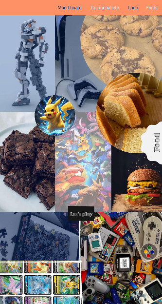
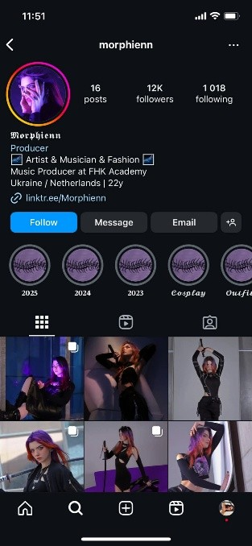
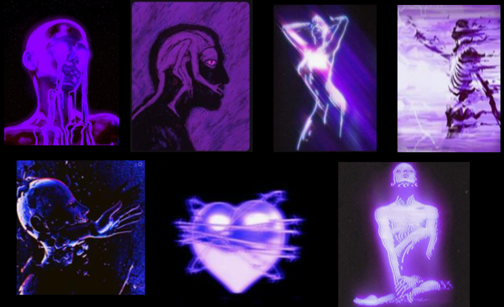
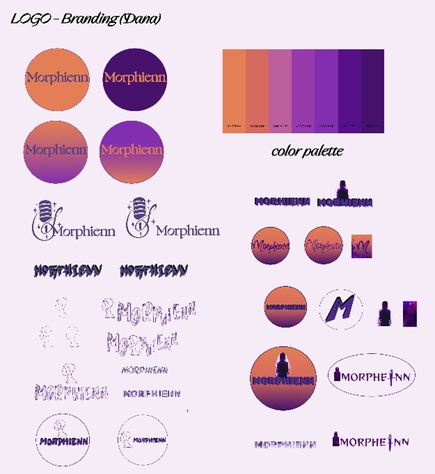
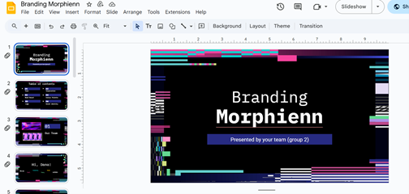

At first my primary focus was on Oscar’s brand guide. To create a strong foundation, I started, exploring his hobbies, personality traits, and personal preferences. Using this information, I designed a mood board that visually represented his identity and interests. This helped establish a clear creative direction for the brand, ensuring it reflected Oscar’s unique character and style.

Dana’s BrandingResearch:
I conducted thorough research to better understand Dana's preferences and brand vision. I found the information from her Instagram, Linkedin and SoundCloud. This included:

Inspiration Board:
After completing the research, I developed an inspiration board that incorporates the key elements of Dana's style, mood, and overall vibe. This board was carefully crafted to reflect her unique aesthetic, drawing from her personal tastes, preferences, and the themes present in her music.

Logo Designs:
I designed several logo concepts, experimenting with different styles, color palettes, and font choices. Each variation was carefully crafted to test different creative approaches while keeping the client’s brand personality in mind. I continuously refined each version, ensuring that the logos maintained a strong visual appeal and reflected the desired brand identity.

Presentation:
My teammate and I worked together to create a presentation for Dana, aimed at showcasing our ideas for her brand guide. I created the following slides:
